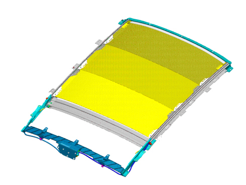
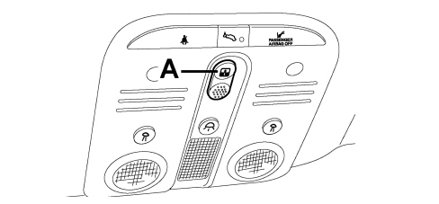

7030L TRANSPARENT ROOF PANEL
- Path
- Descriptions > 70 FITTINGS > 7030 SUN ROOF/GLASS PANEL > 7030L TRANSPARENT ROOF PANEL
- Kind
- system description
- Applies to
- all engines; all production periods
- Interactive page
- https://sloeber94.github.io/elrnDB-aBrrSpdr/en/#/946003679
Applies to: all engines; all production periods
GLASS ROOF SLIDING BLIND
Introduction
The fixed glass sunblind consists of 2 panels sliding lengthways that stow away out of sight in a compartment in the rear part of the roof in an area covered by the roof panel.
The sunblind extends so far that it completely obscures the glass bonded on the roof panel and fits to the roof lining.
During opening the sunblind panels slide along the side guides until they are positioned in the section box. The sun blind panels are placed in rest position by the inner shape of the box and by two preload springs.
Side pads guarantee the absence of noise when the sunblind panels are sliding.
The sunblind section system is made up as follows:
1. a frame made up of the following parts:
- front crossmember (plastic)
- central crossmember (metal)
- rear crossmember (plastic)
- right/left side guides (aluminium)
- section box (plastic)
- two springs with comoulded plastic terminals.
2. two coiled metal cables with comoulded plastic terminal (right/left) operated by an electric motor fitted into the aluminium guides making up the frame to move the sun blind panels.
3. a front sunblind panel and two rear sunblind panels with their own slide pads.

Operation
Control button (A) is located in the front courtesy light unit. The panels are closed and opened by operating the pushbutton.

Automatic opening
Takes place when the opening button is pushed for T>300 msecs.
The sunblind panels move from fully closed position to max opening position when they are positioned inside the section box.
This movement takes place in three steps.
Automatic closure
Takes place when the closure button is pushed for T>300 msecs.
From sunblind panels located in the section box move from fully open to closed position to completely obscure the glass part of the roof.
This movement takes place in a single step.
Anti-crush safey function
The sunblind panels may be moved only with the key on and they are also equipped with an antipinch system managed by the electronic control unit and active during the panel closure stage.
The function is active during the movement and throughout its travel. When the panel meets an obstacle on the front side of the sunblind panel, the direction of motion is reversed.
Initialization procedure
When the blind device or motor is removed or if the electrical power is disconnected with the blind moving or during the 10 seconds after it comes to a stop, the sliding blind system must be re-initialised as described below.
- Move the sunblind to fully closed position if it is not already in that position.
If the antipinch function cuts in continuously, force the panel to closed position by pressing the button in closed position. After 10 seconsds, the roof moves to closed position in jerks (provided the button is held down). When the panel makes contact with the mechanical stop (metallic noise), release the button.
- Remove the electronic key for at least 10 seconds and then re-insert it into the TEG Reader.
- Press the button to closed position.
- Keep the button pressed until you hear the mechanical geared motor stop.
- Within 3 seconds, re-press the button in CLOSED position.
- Keep the button pressed in the same position. At this point, the roof will perform a full automatic open and close cycle. Keep the button pressed during the cycle. If this does not take place, repeat the operations from the beginning.
The initialisation cycle is complete.